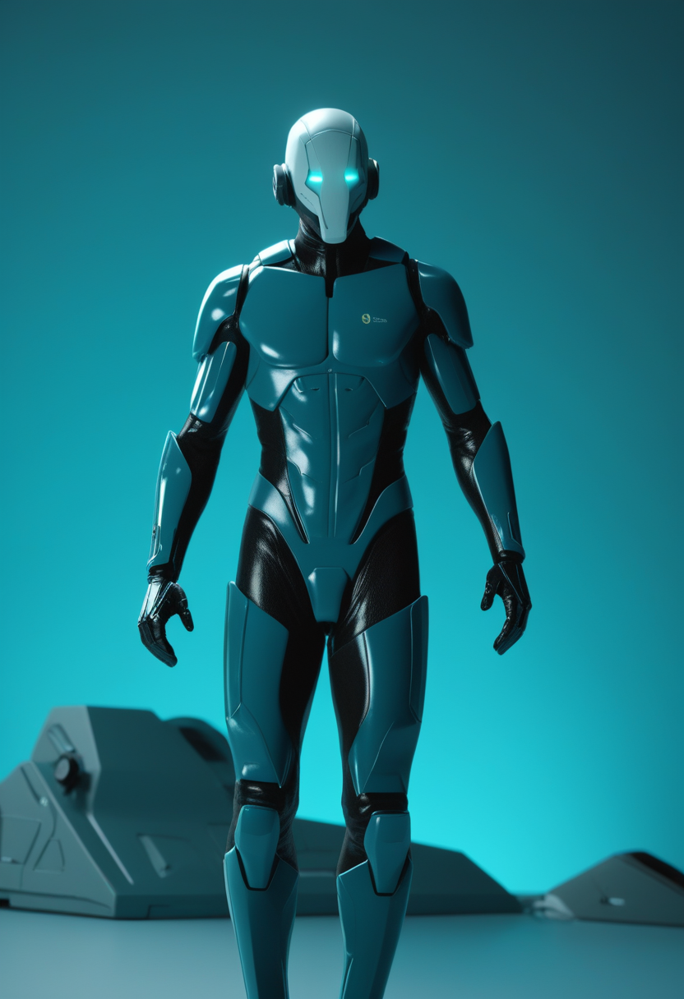
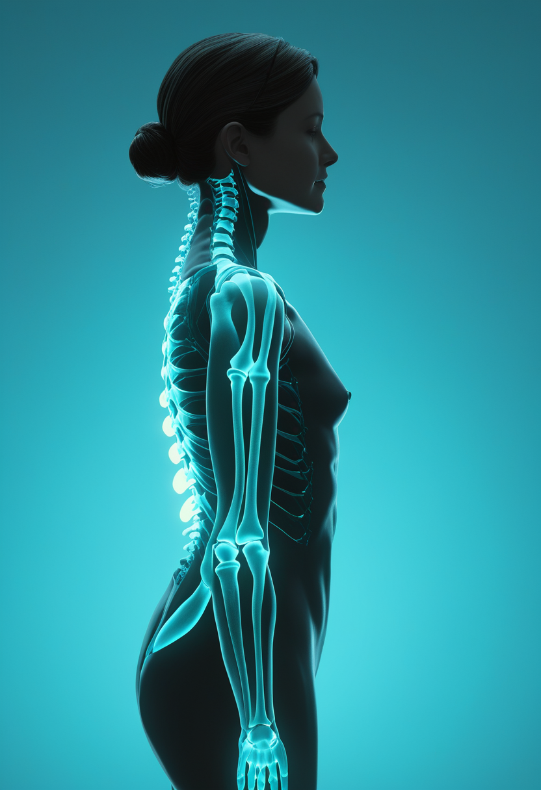
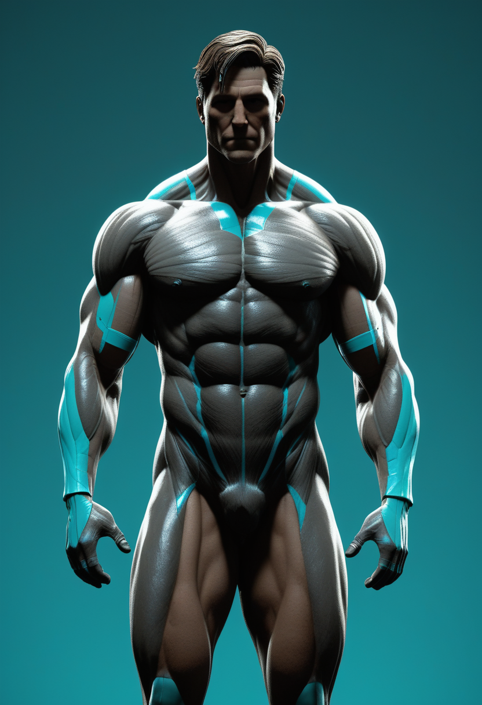
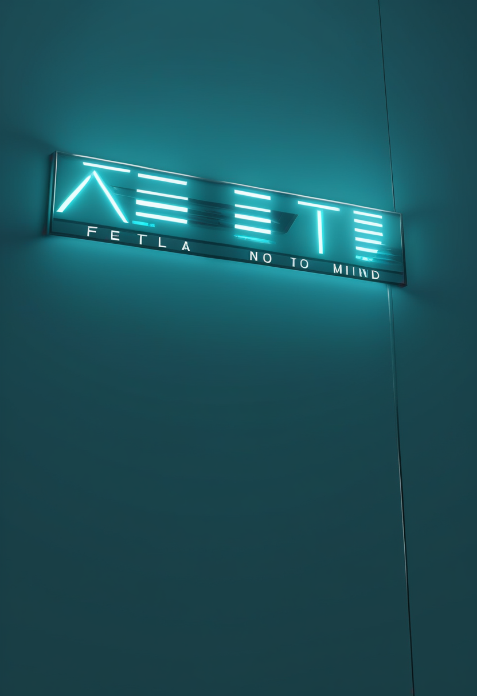

木曜日の便り。DRC(コンゴ民主共和国)のブンディブギョ型エボラは、WHOが8/1時点で確定3,748例・死者1,657人・回復708人に達したと発表した ― 8/5号既報のDON614(7/30時点、3,605例・1,587人)からわずか2日間で143例・70人が積み増された形となる。これと並行し、この病原体としては世界初となるブンディブギョ種特異的ワクチン候補の動物治験が英国(7/24)とカナダ(8月第1週)で始動し、WHOの分析を経て次段階への移行が判断される見通しとなった。基盤/公衆衛生ではもう一つ、イトゥリ州ブニア近郊のキゴンゼ避難民キャンプに国内最大となる新治療センター(100床、International Medical Corpsが米国の支援を受け運営)が今週開設され、既存の計約900床を補完する。命の章では、Biogenのsalanersenが6/4にFDAの画期的治療薬指定を取得し、Scholar Rockのapitegromabは9/30のFDA審査期限を控えつつ欧州側の承認手続きが後ろ倒しとなった。自由の章では、Neuralinkがカナダ初のALS患者に硬膜を切開しない新手術ロボットでの埋め込みを実施し術後1時間でカーソル操作を達成、Blackrock Neurotechは脳内電極の10年間の長期安全性データを発表した。畏敬の章では、使用済みSpaceX Falcon9第2段が計画外に月面へ衝突し、JAXAのはやぶさ2は小惑星への世界記録的接近フライバイに成功した。そして美の章では、エジプトで発見された1700万年前の化石類人猿が類人猿系統の起源地を北アフリカに指し示し、マンモス521頭のDNA分析が氷河期の人類による大規模な狩猟の証拠を明らかにした ― 警鐘と探究が同時に進む一日となった。
WHOは8/1時点で、DRCのブンディブギョ型エボラが確定3,748例・死者1,657人(致死率約44%)・回復708人に達したと発表した。8/5号既報のDON614(7/30時点、確定3,605例・死者1,587人)からわずか2日間で143例・70人が積み増された計算となる。これと並行し、この病原体に対しては世界初となるブンディブギョ種特異的ワクチン候補の第1段階治験(フェレット・サルによる動物試験)が英国で7/24に、カナダでも8月第1週に始動した。両治験ともWHOの分析を経て次段階へ進むか判断される予定で、詳細な結果判明までは数カ月を要するとみられる。

Biogenは6/4、SMA治療薬candidateであるsalanersen(BIIB115)についてFDAの画期的治療薬(Breakthrough Therapy)指定を取得したと発表した。遺伝子治療を受けたものの反応が不十分だった小児を対象とする探索的Phase1bデータが根拠となり、年1回投与後に運動機能の改善と神経フィラメント軽鎖値の低下(神経変性の緩和を示唆)が確認された。同社はSTELLAR-1・SOLAR・STELLAR-2の3本からなるグローバルPhase3プログラムを推進している。

Scholar Rockは、筋肉量増強を狙う抗体医薬apitegromabのSMA向け欧州販売承認申請(MAA)について、CHMP(欧州医薬品委員会)の意見表明が2026年内の後ろ倒しになる可能性があると発表した。原因は製造拠点Catalent Indiana施設のFDAによる査察分類手続きの遅れで、同施設の分類確定または第2の充填施設の申請書への追加を待つ必要がある。一方、米国ではFDAがBLA(生物学的製剤承認申請)を受理しており、審査期限(PDUFA)は2026年9月30日に設定されている。
MDA 2026カンファレンスで発表されたデータによれば、新生児スクリーニングで発見され症候発現前にEvrysdi(risdiplam)による治療を開始した乳児のうち、3年間の治療を完了した23人中21人(91%)が支えなしで座位・起立・歩行のいずれも達成した。安全性プロファイルも治療期間を通じて安定していたと報告されている。
SMA治療は、遺伝子治療の反応不十分例を追いかけるsalanersenの規制上の前進、承認手続きが地域によって速度差を見せるapitegromab、そして症候発現前治療の長期的な効果を裏付けるEvrysdiの実績データが並び、新薬開発・規制・実臨床のそれぞれの段階で着実な進展が続いている。
Neuralinkは5/20、トロント・ウェスタン病院で、ALSを患うバンクーバー市警の巡査部長に対しカナダ初となる同社BCIの埋め込み手術を実施した。従来のように硬膜を切開して電極を配置するのではなく、新開発の手術ロボットが電極の束を硬膜越しに挿入する新手法を初めて採用し、繊細な手作業の工程を省くことで再現性の高い安全な手術を目指す。患者は術後1時間以内にカーソル操作を達成した。
Blackrock Neurotechは、脊髄損傷患者5人の体性感覚皮質にNeuroPort電極アレイを埋め込み触覚を再現する皮質内微小刺激(ICMS)について、実装期間2〜10年にわたる長期安全性・有効性データをScience Translational Medicine誌に発表した。合計24年間の埋め込み期間を通じて1億6,800万回超のICMSパルスを送出したが、重篤な有害事象は一件も確認されなかったという。
BCIは、硬膜を切開しない新手術ロボットによる埋め込みの迅速化(Neuralink)と、10年規模の長期データに裏付けられた安全性の実証(Blackrock)という、実装の速さと積み重ねた実績という異なる軸で同時に成熟が進んでいる。
WHOは8/1時点で、DRCのブンディブギョ型エボラが確定3,748例・死者1,657人(致死率約44%)・回復708人に達したと発表した。これと並行し、この病原体に対する世界初のブンディブギョ種特異的ワクチン候補の第1段階治験(動物試験)が英国で7/24に、カナダでも8月第1週に始動し、WHOの分析を経て次段階への移行が判断される見通しとなった。
国際医療団体International Medical Corps(IMC)は米国の支援を受け、イトゥリ州都ブニア近郊のキゴンゼ避難民キャンプに病床100床を備えるDRC国内最大のエボラ治療センターを今週開設した。疑い症例をより迅速に特定し、確定患者を各治療センターへ搬送しやすくすることが狙いで、5州にまたがる既存の計約900床の体制を補完する。
DRCエボラは症例数が2日間で143例増と拡大速度が衰えない一方、国内最大の新治療センター開設と世界初のワクチン治験開始という2つの対応強化が同時に動き出し、悪化と体制構築がせめぎ合う局面が続いている。
2025年1月の打ち上げ以来軌道上を漂流していたSpaceX Falcon9第2段(Firefly Aerospaceの月着陸機打ち上げに使用)が8/5、時速約5,400マイルでアインシュタインクレーター付近の月面に計画外の形で衝突した。新たなクレーターは直径20〜30mになるとみられ、欧州南天天文台(ESO)は衝突で舞い上がったデブリの雲からナトリウムとリチウムの分光線を5〜10分間検出した。惑星科学者らは、月の地下構造やクレーター形成過程を知る貴重な観測機会になったとしている。
JAXAは7/30、小惑星探査機「はやぶさ2」が7/5に近地球小惑星Torifuneへのフライバイ探査を実施し、表面からわずか約400mまで接近したと発表した。これは太陽系天体へのフライバイとしては世界記録的な近さで、最接近の3〜4秒前には距離約15〜20kmの地点からLIDARレーザー高度計による測距を2回成功させ、フライバイ中のレーザー測距としても世界初の成果となった。
ArianespaceはESA/EUMETSATの次世代気象衛星「MTG-I2」(愛称Meteosat-14)を8/27、仏領ギアナからアリアン62ロケットで打ち上げる予定と発表した。欧州上空を2.5分ごとに高解像度撮影する観測網の第2機となる。一方、ESAの再使用型宇宙往還機「Space Rider」の実物大着陸ドロップ試験は、試験中の異常により早くとも10月へ延期されたことが明らかになった。
宇宙分野では、計画外に月へ衝突した使用済みロケット段が思いがけない観測機会を生み、はやぶさ2は狙って世界記録的な接近を成功させるという対照的な2つの「近さ」が話題となった一方、ESAは気象観測網の拡充を進めつつ再使用機の試験延期という現実的な足踏みも同時に抱えている。
エジプト・マンスーラ大学と南カリフォルニア大学の国際研究チームは、エジプト北部ワディ・モグラ遺跡で発見された約1700万〜1800万年前(中新世前期)の化石類人猿を新種「Masripithecus moghraensis」として3月にScience誌で報告した。北アフリカ初の確実な化石類人猿で、同時代の東アフリカ産の種よりも現生類人猿に近い特徴を持つことから、テナガザル・オランウータン・ゴリラ・チンパンジー・人類へとつながる類人猿系統の起源地として北アフリカ・中東地域が有力候補になるとの新説を提示した。
ユーラシア・北米各地で発見されたケナガマンモス521頭分(うち448頭は新たに解読)のDNAを分析した大規模研究がCurrent Biology誌に発表された。骨の大量堆積が自然死によるものか、氷河期の人類による狩猟・解体によるものかという長年の論争に対し、DNA証拠は人類の関与を強く示す結果となった。同種を対象とした遺伝解析としては過去最大規模の一つとなる。

6月に公開されたarXiv論文は、行動・状況・生理データから個人の認知・行動を模倣・予測し、意思決定の代理としても機能しうるAIシステムを「認知デジタルツイン(Cognitive Digital Twin)」と定義し、権限(Authority)・自律性(Autonomy)・アクセスと管理(Access and Control)・説明責任(Accountability)・可用性(Availability)から成る「5A」統治枠組みを提案した。個人の生体・行動データをまるごと模倣する技術が、プライバシーや同意を超えたアイデンティティに関わる倫理的課題を提起していると論じている。
人類の起源をめぐっては化石(Masripithecus)とDNA(マンモス狩猟)がそれぞれ新たな証拠を積み上げ、過去を「解き明かす」作業が進む一方、個人をまるごと模倣する認知デジタルツインは技術の実装に先んじて統治の枠組み(5A)が議論され始めており、過去の探究と未来の制度設計が同時並行で進んでいる。
2026年8月6日、DRCのブンディブギョ型エボラは、WHOが8/1時点で確定3,748例・死者1,657人・回復708人に達したと発表し、8/5号既報の数値からわずか2日間で143例・70人が積み増された。これと並行し、世界初となるブンディブギョ種特異的ワクチン候補の動物治験が英国とカナダで始動し、国内最大となる新治療センターもイトゥリ州ブニア近郊に開設された ― 悪化と体制構築がせめぎ合う局面が続いている。命の現場では、Biogenのsalanersenが画期的治療薬指定を取得し、Scholar Rockのapitegromabは欧州側の手続きが後ろ倒しとなる一方、Evrysdiの症候発現前治療は3年後も91%が自力歩行を達成する実績を示した。自由の分野では、Neuralinkが硬膜を切開しない新手術ロボットでカナダ初のALS患者への埋め込みを実施し、Blackrock Neurotechは10年規模の長期安全性データを発表した。畏敬の章では、使用済みロケット段が計画外に月面へ衝突し、はやぶさ2は小惑星への世界記録的な接近フライバイに成功した。そして美の章では、エジプトの化石類人猿とマンモスのDNA分析がそれぞれ人類史に新たな手がかりを加える一方、個人を模倣する認知デジタルツインには実装に先んじて統治の議論が始まっていた。
では、また明日の朝に。 — JaH